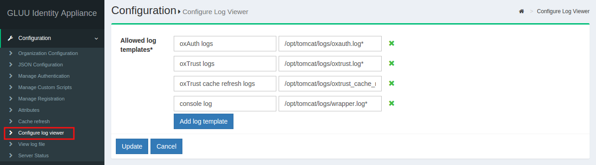

Configuration#
This section of the documentation includes instructions for configuring a number of the components of the Gluu Server in order to adjust the server to your organizational needs.

Organization Configuration#
This section contains the following options: - System Configuration - Manage Email Addresses - SMTP Server Configuration - oxTrust Configuration
System Configuration#
This feature allows the Gluu system administrator to customize and implement various options such as Cache Refresh, Federation Hosting, SCIM Support etc.

-
White Pages: If the user intends to use the built-in White Pages of the Gluu Server, this feature can be enabled here.
-
Self-Service Password Reset: The Self-Service Password Reset is disabled by default. For Self-Service Password Reset to work an SMTP server (see below) should be configured as well. Password reset link for your Gluu server should be something like: "https://your.idp.link/identity/person/passwordReminder.htm".
-
SCIM Support: If the organization already has an identity management or provisioning system in place, the SCIM protocol can be used to push and synchronize the existing identity data into the Gluu Server.
-
DNS Server: The address of the DNS Server goes here.
-
Maximum Log Size: This option can be used to mitigate the space issues within the Gluu Server. The Gluu Server automatically zips any log file which is bigger than the defined value in this field.
-
User Can Edit Own Profiel: This option allows the user to edit his own profile which is located under
Personal.
SMTP Server Configuration#
The Gluu server can communicate to any SMTP server specified in these fields. All Gluu Server related informats (cron daemon/logwatch/crash reports etc.) can be pushed to the desired Gluu Server administrator using this feature.

-
SMTP Host: Name of the SMTP host server.
-
From Name: Name of the Gluu Server administrator.
-
From Email Address: Email Address of the Gluu Server administrator.
-
Required Authentication: If the SMTP server requires authentication for every access, then enable this option by ticking the check-box, please.
-
SMTP User Name: The username for the SMTP server goes here.
-
SMTP Password: The password for the username above goes here. The username and password are used to access the SMTP server.
-
Requires SSL: If the SMTP Server offers communication via SSL enable this option by ticking the check-box.
-
SMTP Port: The number of the SMTP host server port has to be entered here.
oxTrust Settings#
This feature provides options to add various changes in the Gluu Server User Interface. The Gluu Server administrator can add Title, Display Name or even modify the Web User Interface color and logo from this section.

-
Manager Group: The Gluu Server has a single manager group. The users that belong to the manager group can use the Web User Interface to operate the Gluu Server. There is no limit to the number of users that can be added to the manager group.
-
Organization Logo: The organization logo can be uploaded and activated from the configuration menu.
-
Organization Favicon: This feature can be used to change the organization favicon, if desired.
Manage Authentication#
This section allows the Gluu Server administrator to define how and where the server should connect to authenticate users. If it is a remote LDAP/Active Directory server, the values are required. Put the details of the data source that you are trying to connect with Gluu Server. For example, the data source can be your back-end Active Directory, or your local LDAP server.

-
Deactivate: This button Deactivates/Activates the Gluu Server accessibility for authentication.
-
Name: This field contains the name of the authentication server.
-
Bind DN: The Username for the authentication server (local LDAP/remote LDAP/remote Active Directory) goes here.
-
Use SSL: If the authentication server requires a secured port (i.e. 636) then this option should be activated using the check-box.
-
Max Connections: This option can be used to define the total number of simultaneous connections allowed for reading local LDAP/remote Active Directory/remote LDAP.
-
Server: The unique name of the authentication server and port number (i.e. auth.company.org:636) goes here.
-
Base DN: Add base DNs in this field to allow the Gluu Server to connect and search the LDAP server. Every directory tree should be added separately using the Add Base DN option.
-
Primary Key: This field contains the primary key to connect to the authentication server (i.e. SAMAccountName/uid/mail etc.).
-
Local Primary Key: This field contains the internal LDAP primary key of the Gluu Server. Generally the key is either the uid or the mail.
-
Enabled: This check-box is used to enable the keys that are inserted in their respective fields.
-
Change Bind Password: This button assignes a password to authenticate the Authentication Server.
-
Test LDAP Connection: This button checks whether the provided information are sufficient to connect to the authentication server. The scan is done in real time, and it is recommended to be used by the Gluu Server administrators, only.
Default Authentication Method#
This allows the Gluu Server administrator to select both the default authentication mode, and level for person authentication. Both modes are set to "Default" until additional authentication mechanisms are enabled via custom scripts.
Gluu Server uses oxAuth as the first step of authentication in all kind of SSO protocols ( OpenID Connect, SAML, CAS )
| Authentication Method | Description |
|---|---|
| Authentication mode | This mode is used in case of users authenticating with Gluu Server only without entring into oxTrust |
| oxTrust authentication mode | This mode is used for authenticate the GUI admins or users with oxTrust GUI access |

Manage Custom Scripts#
The latest edition of the Gluu Server introduced a new Configuration section called Manage Custom Scripts. This is a single place where the server administrator can manage and implement interception scripts to customize the behavior of the Gluu Server.

Please see the Behaviour Customization page for details.
Manage Registration#

From the Manage Registration interface, the Gluu Server administrator can customize the self-registration work-flow. Each option will be covered individually as described below.
Disable Captcha for registration form#
Upon activating this feature, the default Captcha will be removed from the registration form.
Configure Registration Form Attributes#
By default, there are a limited number of fields present in the self-registration form. If more attributes are needed they can be added in this section of Registration Management. Once you activate this feature, just start typing the attribute name in the Attributes Filter and then add desired attributes to the right column. Finally, click "Update" to complete this step.
Attributes#
An Active attribute list can be seen from the Configuration > Attributes section.

The Gluu Server has a large LDAP tree which includes all standard attributes. It is not necessary for all of them to be Active. The active LDAP trees can be sorted using the Show only Active Attributes link.

The Gluu Server administrator can make changes, such as changing the status to active/inactive, to an attribute after clicking on it.

Additional attributes can be added from the Gluu Server GUI, oxTrust, by clicking the Add Attribute button. Then, the following screen will appear:

-
Name: This field defines the name of the custom attribute which must be unique in the Gluu Server LDAP tree.
-
SAML1 URI: This field contains the SAML1 uri for the custom attribute.
-
SAML2 URI: This field contains the SAML2 uri for the custom attribute.
-
Display Name: This display name can be anything that is human readable.
-
Type: The attribute type should be selected from the drop-down menu. There are four attribute types supported by Gluu:
- Text
- Numeric
- Photo
-
Date
-
Edit Type: This field controls which type of an user is allowed to edit corresponding attribute at his/her "Profile" page of the web UI (when feature "User can edit own profile" is enabled).
-
View Type: This field controls which type of an user is allowed to view corresponding attribute at his/her "Profile" page of the web UI.
-
Privacy Level: Please select the desired privacy level from the drop-down menu. The privacy level has a specific range of 1 to 5.
-
Multivalued: Please select multivalue in this field if the attribute contains more than one value.
-
SCIM Attributes: If the attribute is a part of SCIM architecture select true.
-
Description: This contains a few words to describe the attribute.
-
Status: The status, when selected active, will release and publish the attribute in IdP.
Cache Refresh#
Cache Refresh was built by Gluu to pull user information from a backend customer Active Directory/LDAP Server. Cache refresh dynamically synchronizes user information from the backend data source of the customer to the Gluu Server in order to maximize performance. This feature is sensitive in nature and any incorrect action may result in loss of data within the Gluu Server. Before configuring Cache Refresh, you should read the Cache Refresh overview (see Articles). For any questions relating to Cache Refresh functionality, you can ask for assistance from Gluu Support. For a successful Cache Refresh setup, you have to insert data in ALL FIELDS below.

-
Last Run: The date and time of the latest cache refresh cycle completion is shown here.
-
Updates at the Last Run: This shows the total number of users who have been updated in the last Cache Refresh cycle. For example an user who has any of his attribute updated will show up here.
-
Problem at the Last Run: This shows the number of users who have been rejected by the Gluu Server during the update. If there are any rejections, please contact Gluu Support for clarification and help.

Customer Backend Key and Attributes#

-
Key Attribute: This is the unique key attribute of backend Active Directory/LDAP Server such as SAMAccountname for any Active Directory.
-
Object Class: This contains the Object Classes of the backend Active Directory/LDAP which has permission to talk to Gluu Server Cache Refresh such as person, organizationalPerson, user etc.
-
Source Attribute: This contains the list of attributes which will be pulled and read by the Gluu Server.
-
Custom LDAP Filter: If there is any custom search required, this filtering mechanism can be used such as "sn=*" whereas the value of this field ensures that every user must contain an attribute named SN.
Source Backend LDAP Servers#

This section allows the Gluu Server to connect to the backend Active Directory/LDAP server of the organization.
-
Name: Please input source as the value.
-
Use Anonymous Bind: Some customers do now allow username/password connections to their backend server. Enable this option if this applies to your organization.
-
Bind DN: This contains the username to connect to the backend server. You need to use full DN here. As for example, cn=gluu,dc=company,dc=org.
-
Use SSL: Use this feature if the backend server allows SSL connectivity.
-
Max Connections: This value defines the maximum number of connections that are allowed to read the backend Active Directory/LDAP server. It is recommended to keep the value of 2 or 3.
-
Server: This contains the backend Active Directory/LDAP server hostname with port i.e. backend.organization.com:389. If organization has a failover server, click Add Server and add more hostnames with port.
-
Base DN: This contains the location of the Active Directory/LDAP tree from where the Gluu Server shall read the user information.
-
Enabled: This check-box is used to save and push the changes. Do not use this unless the server administrator has entered all the required values.
-
Change Bind Password: This can be used for a new password or to change any existing password.
If your organization has a multiple Active Directory/LDAP server, click on Add source LDAP server and add the additional server information. Please remember that a failover server is not a new server.
Inum LDAP Server#

This section of the application allows the server administrator to connect to the internal LDAP of the Gluu Server. As Gluu Server administrator, you do not need to insert anything here in this section as new Gluu Server versions automatically populates this for you (unless you try to manually configure it anyway).
-
Refresh Method: The Gluu Server allows the Server Administrator to apply two types of Cache Refresh mechanism--(i) VDS Method and (ii) Copy Method.
-
VDS Method: Any organization with a database like mysql can use the VDS method. This option can be enabled via the drop-down menu in Refresh Method option.

- Copy Method: If the organization has any kind of Active Directory/LDAP server, they are strongly recommended to use the Copy Method from the drop-down menu.

Attributes Mapping#
When the Copy method is selected, a section for Attribute mapping will be exposed. In this section, the Gluu Server Administrator can map any attribute from the backend Active Directory/LDAP to the LDAP cache of the Gluu Server.

In the source attribute to destination attribute mapping field, you can enter the source attribute value on the left, and the destination attribute on the right. In other words, you can specify what the attribute is on the backend in the left field, and what it should be rendered as when it comes through the Gluu Server in the right field.
The Administrator can select any Cache Refresh Method according to the backend Active Directory/LDAP server, but there are some essential values for both types of cache refresh method. The values are given below.
-
Pooling Interval (Minutes): This is the interval value for running the Cache Refresh mechanism in the Gluu Server. It is recommended to be kept higher than 15 minutes.
-
Script File Name: The Gluu Server cache refresh can accept any kind of Jython Script which might help to calculate any custom/complex attribute i.e. eduPersonScopedAffiliation. For more information please contact Gluu Support.
-
Snapshot Folder: Every cycle of of Gluu Server Cache Refresh cycle saves an overall snapshot and problem-list record on a specified location. This is where the Gluu Server Administrator can specify the location. You can easily decide whether cache refresh synchronizes all users or not. Generally the rejected users are enclosed in the problem-list file. An overall report is displayed at the top of the cache refresh page with headings Updated at the last run and Problems at the last run.
-
Snapshot Count: This defines the total number of snapshots that are allowed to be saved in the hard drive of the VM. It is recommended to be kept to 20 snapshots.
Latest Gluu Servers (including Community Edition) introduced two upgraded sections here.
-
Server IP Address: Include the IP of your Gluu Server here. This feature helps to run Cache Refresh mechanism perfectly in a clustered environment.
-
Removed Script File Name location: New version of the Gluu Server allows the administrator to manage your custom scripts with more interactive section under configuration named Manage Custom Scripts.
-
Update: This button is used to push the changes in the Gluu Server. Hit this button only when the values have been entered, completely.
-
Update and Validate Script: This button is used to test the operation and integrity of any custom script such as a Jython Script.
Configure Log Viewer#
The Gluu Server has the facility to read log files using the GUI. The log file can be displayed from the Web UI with a few clicks of the mouse. This feature can be enabled from the configuration menu clicking Configuration --> Configure Log Viewer.

Gluu Server comes preloaded with four logs in this page as the screenshot portrays. The oxAuth, oxTrust, Cache Refresh and the console log is available by default. Clicking on Add log template will bring up boxes where log path can be set to view the same from the GUI. The boxes on the left contain the name/description of the log file, and the right boxes contain the path of the log file such as /opt/tomcat/logs/demo.log.
View Log File#
The log files configured in the earlier section can be viewed using the View log file feature. This feature can be accessed through the configuration menu using Configuration --> View Log File.

The Display last lines count field contains the lines that will be displayed in the Web GUI. If the field contains the value 400, then the Gluu Server will show the last 400 lines of the log in the GUI. The screenshot below shows an according example.

Status#

The Status section provides a high level overview of server metrics. The included values are straightforward and shouldn't require any further explanation.